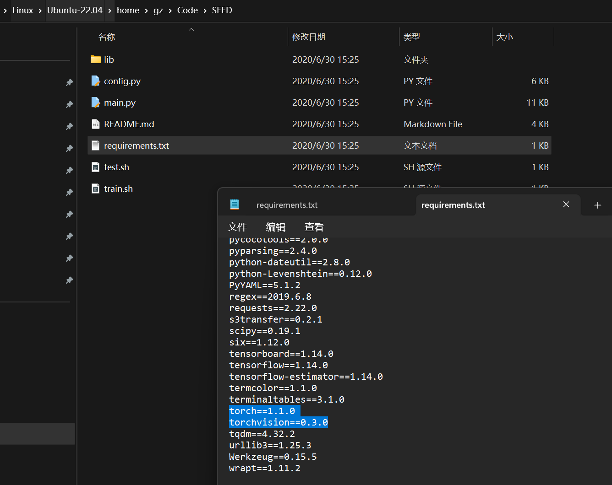

前言
@全体成员 所有一二年级的同学先读一下这篇论文。咱们本周三组会时请每位同学翻译一段，然后分析一下论文写作的特点。该论文是 2020 年 CVPR 会议论文，本年度的 CVPR 截稿日期为 6 月 20 日，是 CCF 推荐会议，希望各位同学关注会议网站，有准备的同学可以投稿。
翻译
Abstract
场景文本识别是个研究热点，最近识别模型都是基于 E-D 的框架，可以处理视角失真（perspective distortion）和曲线形状（curve shape）。但它们对模糊（blur）、不均匀的照明（uneven illumination）、不完整的文字（incomplete characters）不好使。我们认为它们不好使的原因是这些 E-D 方法都是基于局部视觉特征（local visual features）没有用显式的语义信息（explicit global semantic information）。我们提出了一个语义增强的 E-D 框架来鲁棒地识别低质量的场景文本。语义信息（semantic information）在 E 中被用在监督，在 D 中被用于初始化。特别地，当前的 SOTA（state-of-the-art）ASTER 算法 也被用在我们所提出的框架中。大量的实验表明，我们这个模型对低质量图像具有鲁棒性。在几个基准数据集上获得 SOTA。代码即将可用。
1 Introduction
-
convincing performance（令人信服的性能）
-
conventional（传统的）
-
promising results（可喜的结果）
-
background interfere（背景干扰）
-
occlusion（遮挡）
-
regular（常规）
-
each time step（间距）
-
For irregular（不规律的）based text recognition, the rectification（校正）based methods
-
Rectification based methods first rectify the irregular images, then the following pipeline（管道）is as those of regular recognition（规则识别）
-
multi-direction encoding（多向 E）使用带两个 LSTMs 的 CNN 给四个方向编码
-
2D-attention 使用 2D-attention 机制处理不规则文本，直接处理二维的 feature map
如果只把文字识别单纯视作是一个字符分类任务，忽略全局语义，那么对低质量图像识别出来会是依托答辩。
语义信息（semantic information）有两个优点：
-
在 NLP 中可以用 一个词嵌入（a word embedding）来进行监督（supervised）
-
gap（差距）
-
cross-modality task（跨模态任务）
-
concepts（观念）
-
weighted ranking loss（加权排名损失）
我们这个模型会预测语义信息，并通过来自预训练的语言模型的单词嵌入来监督。
- integrate（集成）
2 Related Work
2.1 Scene Text Recognition
-
传统方法 adopt（采用）a bottom-up approach（方法），先检测和分类字符，然后使用启发式规则（heuristic rules）、语言模型（language models）或词典（lexicons）。整了一堆手工提取的计算成本高（computationally expensive）特征用于 SVM，如纵横比（aspect ratio）、孔面积比（hole area ratio）
-
HOG descriptors（HOG 描述符）
-
Hough voting（Hough 投票机制）
-
treats（视作）
-
character alignment（字符调整）
-
contextual dependencies（上下文相关性）
-
attention drift（注意力漂移）
上述方法都假定（assume）文本是水平（horizontal）的，带透视扭曲和曲线就寄。提出了 STN 解决这个问题，还可以用迭代矫正（iterative rectification）和几何约束（geometric constraints）矫正（rectifies），矫正（rectifying）
-
in spite of（尽管）
-
auxiliary dense character（辅助稠密特征）
-
tailored（特制的）
2.2 Semantics in Scene Text
-
contextualized lexicons（语境化词典）
-
word spotting system（单词识别系统）
-
boost（促进）
-
utilize（应用）
-
integrate（合并）
-
explicitly（准确地）
3 Method
3.1 Encoder-Decoder Framework
-
simplicity（简单地）
-
fixed（固定）
-
drawback（缺点）
-
inspired（启发）
-
shortcuts（捷径）
-
capable（能干的）
3.2 FastText Model
设 是文本语料库中的一个句子。
-
是句子的长度，是一个超参数
-
单词 由嵌入向量 表示，然后输入到简单的前馈神经网络（simple feed-forward neural network）
-
目的是预测表示为 C_i=w_{i−l},…,w_{i−1},w_{i+1},…,w_{i + l}。通过前馈网络的训练，同时对嵌入向量进行优化，最终得到的单词嵌入向量与语义相近的单词接近
-
FastText 还嵌入了子单词（subwords），使用它们生成单词 的最终嵌入。
3.3 SEED
3.3.1 General Framework
-
scenarios（情景）
-
address these problems（解决这些问题）
-
utilizing（使用）
-
alternative（可替代的）
-
fed into（馈送）
3.3.2 Architecture of Semantics Enhanced ASTER
-
exemplar（模板）
-
transcribes（转录）
-
thin-plate splines（薄板样条）
-
rectified image（矫正图像）
编码器的输出是形状为 的特征序列 ， 是 CNN 中最后一个特征图的宽度， 是深度。
特征序列 有两个功能：
-
通过语义模块预测语义信息
-
作为 D 的输入
-
将特征序列平坦化为一维向量 ，维数为 ，，语义信息 通过两个线性函数预测
-
In particular, the semantic information S is used to initialize the states of GRU after a linear function for transforming the dimension.
- 特别地，使用语义信息 对 GRU 的状态进行初始化，并对维度进行线性函数变换。
-
Instead of using zero-state initializing, the decoding process will be guided with global semantics, so the decoder uses not only local visual information but also global semantic information to generate more accurate results.
- 解码过程将以全局语义为指导，而不是使用零状态初始化，因此解码器不仅使用局部视觉信息，还使用全局语义信息来生成更准确的结果。
3.4Loss Function and Training Strategy
- 是预测概率相对于 GT 的 standard cross-entropy
- 是预测的语义信息和从预训练 FastText 模型中转录标签词嵌入和预测语义信息的余弦嵌入损失.
- two training strategie（策略）
- 用预训练的 FastText 模型中的词嵌入而不是预测的语义信息初始化 D
- 直接预测语义信息
4 Experiments
4.1 Datasets
-
implementation details（实现细节）
-
benchmarks（基准）
-
cropped（裁切不正的）
-
careful capture（小心捕捉）
-
resolution（分辨率）
-
synthetic（合成）
-
It contains words from the testing set of the IC13 and SVT. 它包含来自 IC13 和 SVT 测试集的单词
4.2 Implementation Details
-
officially（正式地）
-
symbols（符号）
-
采用 ADADELTA 最小化目标函数
-
文本生成任务中常用的解码策略Beam Search（集束搜索）
-
accumulative scores（累积计分）
4.3 Ablation Study
-
separately（分开）
-
consistently（一贯地）
-
predicted holistic features（预测整体特征）
-
implicit weakly supervised（隐式弱监督）
4.4 Performance with Inaccurate Bounding Boxes
-
real applications（真正的应用程序）
-
If text recognition is robust to inaccurate detection results, the overall end-to-end performance can be more satisfactory
- 如果文本识别对不准确的检测结果具有鲁棒性，则整体端到端性能可以更令人满意
-
receptive field（接受域）
-
conduct experiments（进行实验）
-
situation（情况）
-
exemplar（样本）
-
shrink datasets（小数据集）
-
simultaneously（同时地）
-
intersection over union（交集/并集）
4.5 Generalization of Proposed Framework
-
generalization（泛化性）
-
ntegrate another state-of-the-art recognition method SAR
- 集成了另一种 SOTA：SAR
4.6 Qualitative Results and Visualization
- occlusion（遮挡）
代码
从 Pay20Y/SEED (github.com) 下载代码到系统上，把 requirement.txt 里关于 torch 的删了。

装！
1 | |
中间会因为装 pycocotools 失败而寄，填之：
1 | |
继续，然后装 scipy 会寄，从 requirement.txt 里删了它重新装直到没有报错。
从 Word vectors for 157 languages · fastText 里下载下载预训练语言模型 cc.en.300.bin：